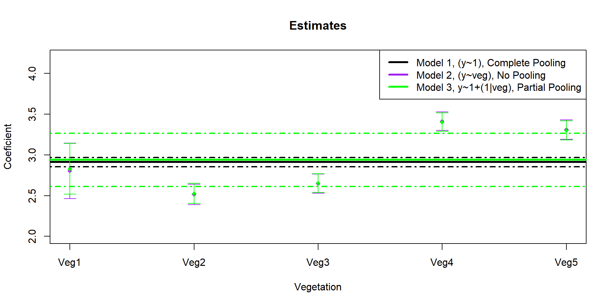

Hierarchical Models
Objectives
- where they are used
- examples
- case study
Hobbs and Hooten 2015 (pg. 109)
Representing variation among individuals arising, for example, from genetics, location, or experience.
Studying phenomena operating at more than one spatial scale or level of ecological organization.
Modeling a process as well as uncertainty that results from imperfect observations of the process.
Understanding changes in states of ecological systems that cannot be observed directly. These states arise from “hidden” processes.
General Types
Random Effect / Multi-level Model
latent/unobserved state or process
Example 1
- student grades within classroom, within school

Example 2
- forest cover effect on occurrence of bobcats at different protected areas

Random Effect / Multi-level Model
repeated measurements of individual within population
repeated measurements at a small spatial scale that is part of a larger one
Hierarchical Structure to Data

Hierarchical Structure to Data

Hierarchical Structure to Data

Hierarchical Structure to Data

Latent State

Latent State

Data and Problem
We sample Amur Leopards in five different vegetation types of Land of the Leopard National Park.

Interested in detection rate by vegetation type and overall.
Data and Problem
We sample Amur Leopards in five different vegetation types of Land of the Leopard National Park.
Detection Rate = Independent Counts / Effort
Data
y x effort
1 10 Veg1 5
2 8 Veg1 5
3 8 Veg1 5
4 11 Veg1 5
5 10 Veg1 5
6 10 Veg1 5
Model 1 (No Difference)
summary(model1) Family: poisson ( log )
Formula: y ~ 1
Data: dat
AIC BIC logLik deviance df.resid
6138.7 6142.2 -3068.3 6136.7 249
Conditional model:
Estimate Std. Error z value Pr(>|z|)
(Intercept) 3.14605 0.01312 239.8 <2e-16 ***
---
Signif. codes: 0 '***' 0.001 '**' 0.01 '*' 0.05 '.' 0.1 ' ' 1Model 1 (No Difference)
marginaleffects::predictions(model1,type = "response")
Estimate Std. Error z Pr(>|z|) S 2.5 % 97.5 %
23.2 0.305 76.2 <0.001 Inf 22.6 23.8
23.2 0.305 76.2 <0.001 Inf 22.6 23.8
23.2 0.305 76.2 <0.001 Inf 22.6 23.8
23.2 0.305 76.2 <0.001 Inf 22.6 23.8
23.2 0.305 76.2 <0.001 Inf 22.6 23.8
--- 240 rows omitted. See ?avg_predictions and ?print.marginaleffects ---
23.2 0.305 76.2 <0.001 Inf 22.6 23.8
23.2 0.305 76.2 <0.001 Inf 22.6 23.8
23.2 0.305 76.2 <0.001 Inf 22.6 23.8
23.2 0.305 76.2 <0.001 Inf 22.6 23.8
23.2 0.305 76.2 <0.001 Inf 22.6 23.8
Columns: rowid, estimate, std.error, statistic, p.value, s.value, conf.low, conf.high, y
Type: response Model 2 (All Different)
summary(model2) Family: poisson ( log )
Formula: y ~ x
Data: dat
AIC BIC logLik deviance df.resid
1357.8 1375.4 -673.9 1347.8 245
Conditional model:
Estimate Std. Error z value Pr(>|z|)
(Intercept) 2.61640 0.02260 115.75 <2e-16 ***
x1 -0.41033 0.04281 -9.59 <2e-16 ***
x2 -1.63807 0.07087 -23.11 <2e-16 ***
x3 -0.39503 0.04257 -9.28 <2e-16 ***
x4 1.44783 0.02678 54.07 <2e-16 ***
---
Signif. codes: 0 '***' 0.001 '**' 0.01 '*' 0.05 '.' 0.1 ' ' 1Model 2 (All Different)
marginaleffects::predictions(model2,
newdata = data.frame(x=c("Veg1","Veg2","Veg3","Veg4","Veg5")),
re.form=NA)
Estimate Std. Error z Pr(>|z|) S 2.5 % 97.5 %
9.08 0.426 21.3 <0.001 332.2 8.24 9.92
2.66 0.231 11.5 <0.001 99.8 2.21 3.11
9.22 0.429 21.5 <0.001 337.3 8.38 10.06
58.22 1.079 54.0 <0.001 Inf 56.11 60.33
37.04 0.861 43.0 <0.001 Inf 35.35 38.73
Columns: rowid, estimate, std.error, statistic, p.value, s.value, conf.low, conf.high, x, y
Type: response Model 3 (middle-ground)
summary(model3) Family: poisson ( log )
Formula: y ~ 1 + (1 | x)
Data: dat
AIC BIC logLik deviance df.resid
1390.4 1397.5 -693.2 1386.4 248
Random effects:
Conditional model:
Groups Name Variance Std.Dev.
x (Intercept) 1.217 1.103
Number of obs: 250, groups: x, 5
Conditional model:
Estimate Std. Error z value Pr(>|z|)
(Intercept) 2.6173 0.4939 5.3 1.16e-07 ***
---
Signif. codes: 0 '***' 0.001 '**' 0.01 '*' 0.05 '.' 0.1 ' ' 1Model 3 (middle-ground)
ranef(model3)$x
(Intercept)
Veg1 -0.4104470
Veg2 -1.6289235
Veg3 -0.3951846
Veg4 1.4465567
Veg5 0.9942933broom.mixed::tidy(model3, effects = "ran_vals", conf.int = TRUE)# A tibble: 5 × 9
effect component group level term estimate std.error conf.low conf.high
<chr> <chr> <chr> <chr> <chr> <dbl> <dbl> <dbl> <dbl>
1 ran_vals cond x Veg1 (Interce… -0.410 0.495 -1.38 0.560
2 ran_vals cond x Veg2 (Interce… -1.63 0.498 -2.61 -0.652
3 ran_vals cond x Veg3 (Interce… -0.395 0.495 -1.37 0.575
4 ran_vals cond x Veg4 (Interce… 1.45 0.494 0.478 2.41
5 ran_vals cond x Veg5 (Interce… 0.994 0.494 0.0257 1.96 fixef(model3)
Conditional model:
(Intercept)
2.617 #Predictions - does not include RE uncertainty
preds = predict(model3,
newdata=data.frame(x=c("Veg1","Veg2","Veg3","Veg4","Veg5")),
type="link",
re.form=NULL,
se.fit = TRUE
)
preds$LCL = exp(preds$fit-1.96*preds$se.fit)
preds$UCL = exp(preds$fit+1.96*preds$se.fit)
preds$fit = exp(preds$fit)
data.frame(preds) fit se.fit LCL UCL
1 9.086746 0.04688339 8.288967 9.961307
2 2.686772 0.08629719 2.268679 3.181914
3 9.226495 0.04652728 8.422324 10.107449
4 58.196226 0.01853791 56.119660 60.349630
5 37.023659 0.02323965 35.375073 38.749074#A typical site
predict(model3,type="response",re.form=NA)[1][1] 13.69819Model 3b
equatiomatic::extract_eq(model3b)\[ \begin{aligned} \operatorname{y}_{i} &\sim \operatorname{Poisson}(\lambda_i) \\ \log(\lambda_i) &=\alpha_{j[i]} \\ \alpha_{j} &\sim N \left(\mu_{\alpha_{j}}, \sigma^2_{\alpha_{j}} \right) \text{, for x j = 1,} \dots \text{,J} \end{aligned} \]
Alt Model Notation
\[\begin{align*} y_{i} \sim& \text{Poisson}(\lambda_{i})\\ \text{log}(\lambda_{i}) =& \mu + \alpha_{j[i]}\\ \alpha_{j} \sim& \text{Normal}(0, \sigma^2_{\alpha}) \end{align*}\]
Random Intercept + Slope
Leopard detection varies by cover and veg, where the effect of cover comes from a shared distribution
y cov veg
1 3 0.40161608 Veg1
2 0 -0.12360373 Veg1
3 3 0.62883136 Veg1
4 0 0.07607150 Veg1
5 2 0.04150764 Veg1
6 0 -0.39289231 Veg1Random Intercept + Slope
summary(re.model)Generalized linear mixed model fit by maximum likelihood (Laplace
Approximation) [glmerMod]
Family: poisson ( log )
Formula: y ~ cov + (cov | veg)
Data: dat2
AIC BIC logLik deviance df.resid
14274.7 14295.8 -7132.4 14264.7 495
Scaled residuals:
Min 1Q Median 3Q Max
-4.798 -2.443 -1.630 -0.946 145.188
Random effects:
Groups Name Variance Std.Dev. Corr
veg (Intercept) 0.4896 0.6997
cov 0.1392 0.3732 0.14
Number of obs: 500, groups: veg, 5
Fixed effects:
Estimate Std. Error z value Pr(>|z|)
(Intercept) 1.6210 0.3137 5.166 2.39e-07 ***
cov 0.1121 0.1683 0.666 0.505
---
Signif. codes: 0 '***' 0.001 '**' 0.01 '*' 0.05 '.' 0.1 ' ' 1
Correlation of Fixed Effects:
(Intr)
cov 0.140 Random Intercept + Slope
marginaleffects::plot_predictions(re.model,
condition=c("cov","veg"),
type="link",
re.form=NULL
)
Random Intercept + Slope
marginaleffects::plot_predictions(re.model,
condition=c("cov","veg"),
type="link",
re.form=NA
)
Random Intercept + Slope
equatiomatic::extract_eq(re.model)\[ \begin{aligned} \operatorname{y}_{i} &\sim \operatorname{Poisson}(\lambda_i) \\ \log(\lambda_i) &=\alpha_{j[i]} + \beta_{1j[i]}(\operatorname{cov}) \\ \left( \begin{array}{c} \begin{aligned} &\alpha_{j} \\ &\beta_{1j} \end{aligned} \end{array} \right) &\sim N \left( \left( \begin{array}{c} \begin{aligned} &\mu_{\alpha_{j}} \\ &\mu_{\beta_{1j}} \end{aligned} \end{array} \right) , \left( \begin{array}{cc} \sigma^2_{\alpha_{j}} & \rho_{\alpha_{j}\beta_{1j}} \\ \rho_{\beta_{1j}\alpha_{j}} & \sigma^2_{\beta_{1j}} \end{array} \right) \right) \text{, for veg j = 1,} \dots \text{,J} \end{aligned} \]
FAQ
model specifications
predictions with uncertainty
Testing RE’s
Considerations
Shrinkage/Regularization
When to use a random effect?